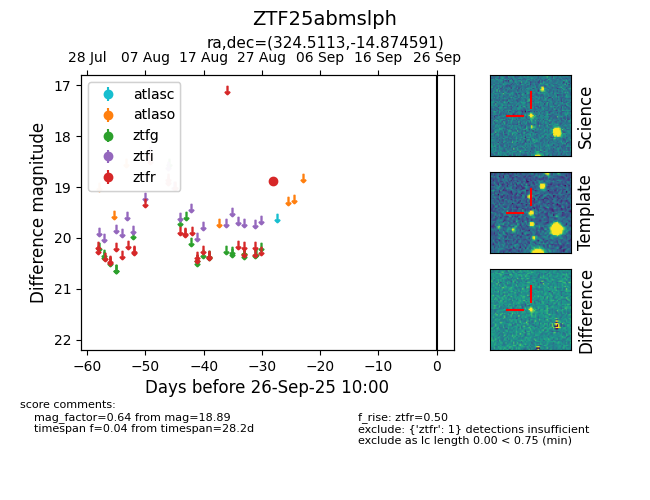

FINK: ZTF25abmslph
Lasair: ZTF25abmslph
ALeRCE: ZTF25abmslph
ZTF25abmslph (ztf,fink)
equatorial (ra, dec) = (324.5113,-14.87459)
galactic (l, b) = (38.0302,-43.52887)

last ztfr=18.89
1 ztfr detections